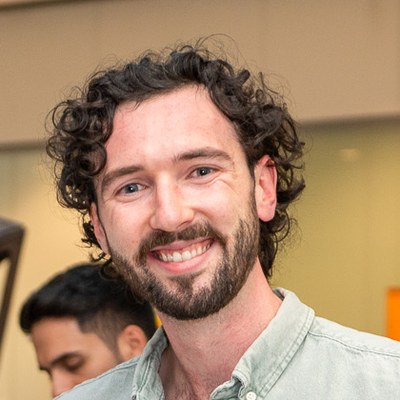

Carl Somers
I'm interested in probabilistic machine learning, and using it to solve problems in weather and energy.
PhD student in CCMI (UCL × Imperial), supervised by Serge Guillas and William Hornsby (UKAEA). I'm researching ML/AI surrogates for expensive simulations in nuclear fusion.
Before that, quant at Fuse Energy working on weather and renewable generation, and quant risk at Allied Irish Bank. MSc Statistics, UCL; BSc Economics, UCD.
News
- Oct 2026Started my PhD at UCL.
- Sep 2026Paper accepted at AI4PowerGrids, NeurIPS 2026, Sydney.
Selected work
-
Conformalised native uncertainty bands for wind power
AI4PowerGrids · NeurIPS 2026 workshop · Sydneycode -
Adaptive conformal inference for wind farm forecasting
Intervals that keep coverage under drift, on top of a spatio-temporal graph network. With F. Javier Rubio and Domna Ladopoulou.
-
Hamiltonian Monte Carlo under structural misspecification
HMC with parallel tempering and custom likelihoods, from scratch.
-
Imbalanced credit-risk classification
1st place · DataLink 2023code